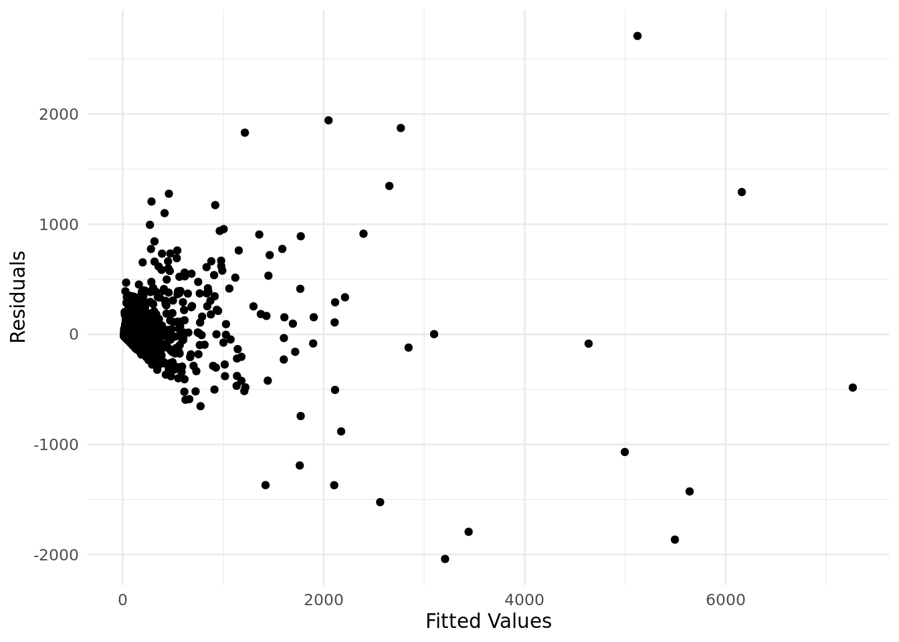
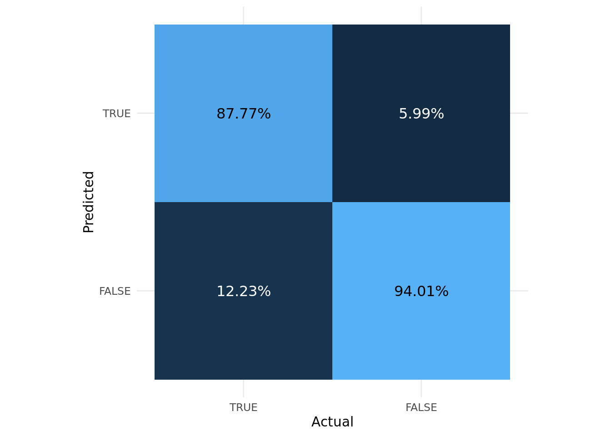
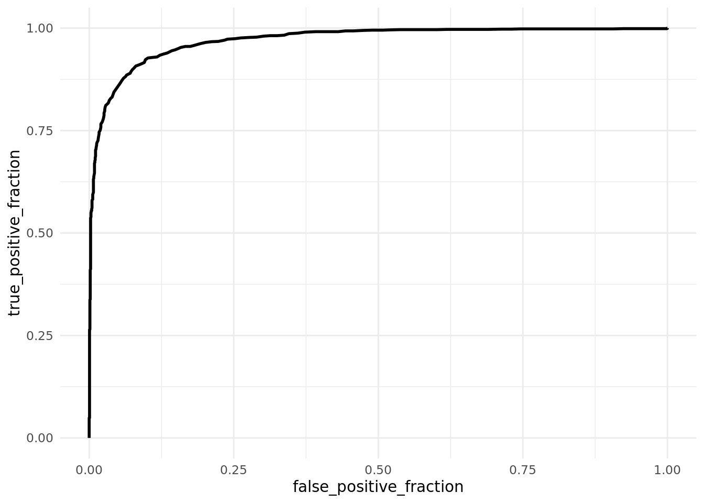

Rows: 3272 Columns: 37
── Column specification ────────────────────────────────────────────────────────
Delimiter: ","
chr (3): county, state, date
dbl (34): fips, fema_region, cases_last_7_days, cases_per_100k_last_7_days, ...
ℹ Use `spec()` to retrieve the full column specification for this data.
ℹ Specify the column types or set `show_col_types = FALSE` to quiet this message.Modeling, Testing, and Predicting
Introduction
With the ongoing pandemic I went to HealthData.gov and found their Community Profile Report (CPR) – County-Level. The following is some information on this dataset based on their documentation. It was developed by Data Strategy and Execution Workgroup in the Joint Coordination Cell, under the White House COVID-19 Team. Each observation in the dataset is county-level. It contains daily snapshots in time that focuses on recent COVID-19 outcomes in the last seven days and changes relative to the week prior.
Package and Data import
Packages
Data Import
Here I defined high and low cases by above and below the median value, and recoded the states into regions (NE:North East,SE:South East,MW:Midwest,SW:South West,W:West).
MANOVA
Run MANOVA
The MANOVA results indicate that total cases, total deaths, cases from the last 7 days, deaths from the last 7 days, test positivity rate from the last 7 days, and confirmed COVID hospitalizations show a mean difference across different regions of the US.
man1 <- manova(
cbind(
total_cases,
total_deaths,
cases_last_7_days,
deaths_last_7_days,
test_positivity_rate_last_7_days,
confirmed_covid_hosp_last_7_days
) ~
region,
data=CovidData
)
summary(man1) Df Pillai approx F num Df den Df Pr(>F)
region 4 0.15215 15.882 24 9640 < 2.2e-16 ***
Residuals 2412
---
Signif. codes: 0 '***' 0.001 '**' 0.01 '*' 0.05 '.' 0.1 ' ' 1Univariate ANOVAs
Post-hoc univariate ANOVAs each show the prior mentioned predictor variables illustrate a mean difference across region.
summary.aov(man1) Response total_cases :
Df Sum Sq Mean Sq F value Pr(>F)
region 4 7.0150e+10 1.7538e+10 19.705 5.634e-16 ***
Residuals 2412 2.1467e+12 8.8999e+08
---
Signif. codes: 0 '***' 0.001 '**' 0.01 '*' 0.05 '.' 0.1 ' ' 1
Response total_deaths :
Df Sum Sq Mean Sq F value Pr(>F)
region 4 52634377 13158594 39.151 < 2.2e-16 ***
Residuals 2412 810675863 336101
---
Signif. codes: 0 '***' 0.001 '**' 0.01 '*' 0.05 '.' 0.1 ' ' 1
Response cases_last_7_days :
Df Sum Sq Mean Sq F value Pr(>F)
region 4 24209477 6052369 30.236 < 2.2e-16 ***
Residuals 2412 482815519 200172
---
Signif. codes: 0 '***' 0.001 '**' 0.01 '*' 0.05 '.' 0.1 ' ' 1
Response deaths_last_7_days :
Df Sum Sq Mean Sq F value Pr(>F)
region 4 3715 928.81 26.256 < 2.2e-16 ***
Residuals 2412 85324 35.37
---
Signif. codes: 0 '***' 0.001 '**' 0.01 '*' 0.05 '.' 0.1 ' ' 1
Response test_positivity_rate_last_7_days :
Df Sum Sq Mean Sq F value Pr(>F)
region 4 0.0651 0.0162849 8.5578 7.436e-07 ***
Residuals 2412 4.5899 0.0019029
---
Signif. codes: 0 '***' 0.001 '**' 0.01 '*' 0.05 '.' 0.1 ' ' 1
Response confirmed_covid_hosp_last_7_days :
Df Sum Sq Mean Sq F value Pr(>F)
region 4 195759 48940 23.928 < 2.2e-16 ***
Residuals 2412 4933260 2045
---
Signif. codes: 0 '***' 0.001 '**' 0.01 '*' 0.05 '.' 0.1 ' ' 1
855 observations deleted due to missingnessPost-hoc t-tests
The below matrices illustrate which group means significantly differ by region and by predictor variable (accounting for the change in significance level mentioned below)
#Total Cases
# Total Cases
total_cases <-
pairwise.t.test(
CovidData$total_cases,
CovidData$region,
p.adj = "none"
)$p.value * 67 > 0.05
kable(total_cases)| MW | NE | SE | SW | |
|---|---|---|---|---|
| NE | FALSE | NA | NA | NA |
| SE | TRUE | FALSE | NA | NA |
| SW | TRUE | FALSE | TRUE | NA |
| W | FALSE | TRUE | FALSE | TRUE |
#Total Deaths
total_deaths <-
pairwise.t.test(
CovidData$total_deaths,
CovidData$region,
p.adj="none"
)$p.value *67 > 0.05
kable(total_deaths)| MW | NE | SE | SW | |
|---|---|---|---|---|
| NE | FALSE | NA | NA | NA |
| SE | TRUE | FALSE | NA | NA |
| SW | TRUE | FALSE | TRUE | NA |
| W | TRUE | FALSE | TRUE | TRUE |
#Cases in the Last 7 Days
cases_last_7_days <-
pairwise.t.test(
CovidData$cases_last_7_days,
CovidData$region,
p.adj="none"
)$p.value * 67 > 0.05
kable(cases_last_7_days)| MW | NE | SE | SW | |
|---|---|---|---|---|
| NE | FALSE | NA | NA | NA |
| SE | TRUE | FALSE | NA | NA |
| SW | TRUE | FALSE | TRUE | NA |
| W | TRUE | FALSE | TRUE | TRUE |
#Deaths in the Last 7 Days
deaths_last_7_days <-
pairwise.t.test(
CovidData$deaths_last_7_days,
CovidData$region,
p.adj="none"
)$p.value * 67 > 0.05
kable(deaths_last_7_days)| MW | NE | SE | SW | |
|---|---|---|---|---|
| NE | FALSE | NA | NA | NA |
| SE | TRUE | FALSE | NA | NA |
| SW | TRUE | FALSE | TRUE | NA |
| W | TRUE | FALSE | TRUE | TRUE |
#Test Positivity Rate in the Last 7 Days
test_positivity_rate_last_7_days <-
pairwise.t.test(
CovidData$test_positivity_rate_last_7_days,
CovidData$region,
p.adj="none"
)$p.value * 67 > 0.05
kable(test_positivity_rate_last_7_days)| MW | NE | SE | SW | |
|---|---|---|---|---|
| NE | TRUE | NA | NA | NA |
| SE | FALSE | FALSE | NA | NA |
| SW | FALSE | TRUE | FALSE | NA |
| W | TRUE | TRUE | FALSE | TRUE |
#Confirmed Covid Hospitalization in the last 7 Days
confirmed_covid_hosp_last_7_days <-
pairwise.t.test(
CovidData$confirmed_covid_hosp_last_7_days,
CovidData$region,
p.adj="none"
)$p.value * 67 > 0.05
kable(confirmed_covid_hosp_last_7_days)| MW | NE | SE | SW | |
|---|---|---|---|---|
| NE | FALSE | NA | NA | NA |
| SE | TRUE | FALSE | NA | NA |
| SW | TRUE | FALSE | TRUE | NA |
| W | TRUE | FALSE | TRUE | TRUE |
Significance level (α):
With 6 numeric predictors and 5 catagorical groups, 67 inference tests were done. This creates a 96.8% chance of having a Type-1 Error. Thus a Bonferroni correction will be done to reduce the 0.05 signifcance level to 0.00075 (7.5e-4).*
1-(0.95)^67 # type one error rate[1] 0.96782770.05/67 # bonferroni correction[1] 0.0007462687MANOVA assumptions
The MANOVA fails the first assumption of normality, there are many other assumptions to check that are harder to meet such as Homogeneity of within-group covariance, linear relationships among dependent variables, and the absence of outliers. This MANOVA is just a proof of concept example.
group <- CovidData %>%
na.omit() %>%
select(region) %>%
mutate(region = as.factor(region))
DVs <-
CovidData %>%
na.omit() %>%
select(
total_cases,
total_deaths,
cases_last_7_days,
deaths_last_7_days,
test_positivity_rate_last_7_days,
confirmed_covid_hosp_last_7_days
)
#Test multivariate normality for each group (null: normality met)
kable(sapply(split(DVs,group), mshapiro_test))| MW | NE | SE | SW | W | |
|---|---|---|---|---|---|
| statistic | c(W = 0.34489267113313) | c(W = 0.607959552000503) | c(W = 0.43185761076474) | c(W = 0.350905905314517) | c(W = 0.254613320396152) |
| p.value | 2.09014628046061e-26 | 1.31446590550276e-17 | 1.09889494210124e-28 | 1.1706250436637e-16 | 3.08035475306469e-16 |
Randomization test
The Null Hypothesis of this Randomization Test is that there is no correlation between positive test rate in the past 7 days and the number of cases the past 7 days. The null distribution of the correlation coefficient is illustrated in dark grey, and the in-sample correlation coefficient is the red vertical line. The probability of a value as extreme as the in-sample value under this “randomization distribution” is 0, therefore we reject the null hypothesis that there is no correlation between these 2 variables.
randData <-
CovidData %>%
na.omit() %>%
select(
test_positivity_rate_last_7_days,
cases_last_7_days
)
# Calcualte possible correlations
# based on collected data shuffling
# to the variables being correlated
rand_dist<-vector()
for(i in 1:10000){
new <- data.frame(
# randomly sample without replacement
positives=sample(
randData$test_positivity_rate_last_7_days
),
cases=randData$cases_last_7_days)
# find correlation for the shuffled data
rand_dist[i]<- cor(new$positives, new$cases)
}Here we calculate the p-value for the observed distribution compared to the null distribution.
# Find the observed correlation
sampleCor <-
cor(
randData$test_positivity_rate_last_7_days,
randData$cases_last_7_days
)
pval <- mean(rand_dist>sampleCor | rand_dist < -sampleCor)
pval[1] 0ggplot(
data.frame(rand_dist),
aes(x=rand_dist)
) +
geom_histogram(bins = 40) +
geom_vline(aes(xintercept=sampleCor), color="red") +
theme_minimal() +
labs(
x = "Randomized Values",
y = "Number of Itererations"
)Linear Regression Model:
Creating and Interpreting
Given average test positivity rate over the last 7 days and average confirmed COVID hospitalizations over the last 7 days the predicted value of cases the last 7 days is 152.968 cases.
431.0901 is the slope for test positivity rate over the last 7 days on cases the last 7 days while holding confirmed covid hospitalizations over the last 7 days constant
8.5943 is the slope for confirmed covid hospitalizations over the last 7 days on cases the last 7 days while holding test positivity rate over the last 7 days constant
The effect of positivity rate over the last 7 days is 11.9381 cases higher for every percent above the mean positivity rate over the last 7 days is.
This linear model explains 82.42% of variance in cases the last 7 days
lmData <- CovidData %>%
select(
cases_last_7_days,
test_positivity_rate_last_7_days,
confirmed_covid_hosp_last_7_days ) %>%
# mean-center predictors
mutate(
posRate =
test_positivity_rate_last_7_days-
mean(test_positivity_rate_last_7_days,na.rm=T),
confirmHosp =
confirmed_covid_hosp_last_7_days-
mean(CovidData$confirmed_covid_hosp_last_7_days,na.rm=T)
)
fit<-lm(cases_last_7_days~posRate*confirmHosp, data=lmData)
summary(fit)
Call:
lm(formula = cases_last_7_days ~ posRate * confirmHosp, data = lmData)
Residuals:
Min 1Q Median 3Q Max
-2039.63 -33.24 -14.33 1.47 2708.79
Coefficients:
Estimate Std. Error t value Pr(>|t|)
(Intercept) 152.9680 3.9324 38.899 < 2e-16 ***
posRate 431.0901 90.5095 4.763 2.02e-06 ***
confirmHosp 8.6846 0.1005 86.457 < 2e-16 ***
posRate:confirmHosp 11.9381 2.1726 5.495 4.32e-08 ***
---
Signif. codes: 0 '***' 0.001 '**' 0.01 '*' 0.05 '.' 0.1 ' ' 1
Residual standard error: 192.2 on 2413 degrees of freedom
(855 observations deleted due to missingness)
Multiple R-squared: 0.8242, Adjusted R-squared: 0.824
F-statistic: 3771 on 3 and 2413 DF, p-value: < 2.2e-16Plot of the Interaction
interact_plot(fit, confirmHosp, posRate, plot.points = T)
Linear Model Assumptions
This linear model fails normality and homoscedasticity and is only to be used an example of the method and interpretation due to these failure of assumptions.
# Normality
shapiro.test(fit$residuals) #H0: true distribution is normal
Shapiro-Wilk normality test
data: fit$residuals
W = 0.49026, p-value < 2.2e-16# Homoscedasticity
ggplot() +
aes(x=fit$fitted.values,y=fit$residuals) +
geom_point() +
theme_minimal() +
labs(
x = "Fitted Values",
y = "Residuals"
)
bptest(fit) # H0: homoskedastic
studentized Breusch-Pagan test
data: fit
BP = 979.38, df = 3, p-value < 2.2e-16Robust Standard Error (SE)
Because the model failed homoskeydacity so robust SE were used allowing for non-constant variance. The robust SE changed the significance of the interaction, increased the positivity rate over the last 7 days p-value, but not above 0.05, and decreased all t values.
coeftest(fit, vcov=vcovHC(fit))
t test of coefficients:
Estimate Std. Error t value Pr(>|t|)
(Intercept) 152.96796 5.23374 29.2273 < 2e-16 ***
posRate 431.09008 170.74945 2.5247 0.01164 *
confirmHosp 8.68462 0.69314 12.5295 < 2e-16 ***
posRate:confirmHosp 11.93807 14.54385 0.8208 0.41182
---
Signif. codes: 0 '***' 0.001 '**' 0.01 '*' 0.05 '.' 0.1 ' ' 1Bootstrapping SE
The bootstrapped SEs are very similar to robust SE (above) and much higher than the original SE, illustrating the robust SE are a more accurate measure of the sample than than the original SE.
samp_distn<-replicate(5000, {
#take bootstrap sample of rows
boot_dat <- sample_frac(lmData, replace=T)
#fit model on bootstrap sample
bootfit <- lm(cases_last_7_days~posRate*confirmHosp, data=boot_dat)
#save coefs
coef(bootfit)
})
samp_distn %>% t() %>% as.data.frame() %>% summarize_all(sd) (Intercept) posRate confirmHosp posRate:confirmHosp
1 5.052734 168.3468 0.6375838 14.74948Logistic Regression Models:
Logistic Model with 2 predictors
Creating and Interpreting
Given the model’s coefficients: for every 1 unit increase in cases in the last 7 days the odds of highCases incrase by 1.04, and for every 1 unit increase in total deaths the odds of highCases increase by 1.06
fit2 <- glm(
highCases~cases_last_7_days+total_deaths,
data=CovidData,
family="binomial")Warning: glm.fit: fitted probabilities numerically 0 or 1 occurredsummary(fit2)
Call:
glm(formula = highCases ~ cases_last_7_days + total_deaths, family = "binomial",
data = CovidData)
Coefficients:
Estimate Std. Error z value Pr(>|z|)
(Intercept) -3.810729 0.137967 -27.62 <2e-16 ***
cases_last_7_days 0.036071 0.002675 13.48 <2e-16 ***
total_deaths 0.055663 0.002484 22.41 <2e-16 ***
---
Signif. codes: 0 '***' 0.001 '**' 0.01 '*' 0.05 '.' 0.1 ' ' 1
(Dispersion parameter for binomial family taken to be 1)
Null deviance: 4534.6 on 3270 degrees of freedom
Residual deviance: 1585.5 on 3268 degrees of freedom
(1 observation deleted due to missingness)
AIC: 1591.5
Number of Fisher Scoring iterations: 11exp(fit2$coefficients) (Intercept) cases_last_7_days total_deaths
0.02213204 1.03672930 1.05724118 Confusion Matrix
From the confusion matrix it appears the model is doing a decent job at classifying points with as little as 5.99% to 12.23% error.
CovidData <- CovidData %>%
filter( complete.cases(CovidData$highCases),
complete.cases(CovidData$cases_last_7_days),
complete.cases(CovidData$total_deaths) )
table(Predicted = (predict(fit2,type="response")>0.5) ,
Actual = CovidData$highCases) %>%
as.data.frame() -> conf_mat
conf_mat <- conf_mat %>%
group_by(Actual) %>%
mutate(percent=Freq/sum(Freq))
ggplot(conf_mat) +
aes(y=factor(Predicted,levels=c(F,T)),
x=factor(Actual,levels=c(T,F)),
fill=Freq,
label=paste0(round(percent*100,2),"%") ) +
geom_tile() +
ggfittext::geom_fit_text(contrast = TRUE, reflow =TRUE) +
scale_colour_discrete() +
coord_fixed() +
xlab("Actual") +
ylab("Predicted") +
theme_minimal()+
theme(legend.position = "none")
The below table and provides diagnostic measures of the predictive power of the Logistic Model with 2 predictors.
class_diag<-function(probs,truth){
tab<-table(factor(probs>.5,levels=c("FALSE","TRUE")),truth)
acc=sum(diag(tab))/sum(tab)
sens=tab[2,2]/colSums(tab)[2]
spec=tab[1,1]/colSums(tab)[1]
ppv=tab[2,2]/rowSums(tab)[2]
if( is.numeric(truth)==FALSE &
is.logical(truth)==FALSE){
truth<-as.numeric(truth)-1
}
#CALCULATE EXACT AUC
ord<-order(probs, decreasing=TRUE)
probs <- probs[ord]; truth <- truth[ord]
TPR=cumsum(truth)/max(1,sum(truth))
FPR=cumsum(!truth)/max(1,sum(!truth))
dup<-c(probs[-1]>=probs[-length(probs)], FALSE)
TPR<-c(0,TPR[!dup],1); FPR<-c(0,FPR[!dup],1)
n <- length(TPR)
auc<- sum( ((TPR[-1]+TPR[-n])/2) * (FPR[-1]-FPR[-n]) )
data.frame(
Accuracy = acc,
Sensitivity = sens,
Specificity = spec,
PPV = ppv,
AUC = auc)
}
probs <- predict(fit2)
metrics <- class_diag(probs, CovidData$highCases)
output_2pred <-
metrics %>%
t() %>%
as.data.frame() %>%
rename(`Value(2)` = "TRUE") %>%
mutate(`Value(2)` = paste0(round(`Value(2)`*100,2),"%"))
kable(output_2pred)| Value(2) | |
|---|---|
| Accuracy | 89.94% |
| Sensitivity | 83.49% |
| Specificity | 96.39% |
| PPV | 95.86% |
| AUC | 97.21% |
Density Plot
This density plot illustrates the predictor value (logit) compared to the actual group membership to highCases.
densityVal <- CovidData %>% mutate(logit=fitted(fit2) )
ggplot(densityVal) +
aes(x=logit, fill=highCases) +
geom_density(alpha=.5) +
theme_minimal() +
labs(
x = "logit",
y = "Density"
)
ROC and AUC
This ROC curve is of the logistic model with 2 predictors. Based on the shape of the ROC curve and the AUC of the ROC curve, the classification of this 2 predictor logistical model is very good
ROCplot <-
CovidData %>%
mutate(
highCases =
case_when(
highCases ~ 1,
!highCases ~ 0,
.default = NA
)
) %>%
ggplot()+
aes(d=highCases,m=cases_last_7_days+total_deaths) +
geom_roc(n.cuts=0) +
theme_minimal()
ROCplot
calc_auc(ROCplot) PANEL group AUC
1 1 -1 0.9704336Logistic Model with all predictors
Creating and Interpreting
From including all variables the model was made more flexible, but had lower values for Accuracy, Sensitivity, and AUC, as there was more noise introduced.
lassoData <- CovidData %>%
select(-fips, -county,-date) %>%
na.omit
fit3 <- lm(highCases~(.), data=lassoData)
probs <- predict(fit3,data=lassoData)
metrics <- class_diag(probs, lassoData$highCases)
output_all <-
metrics %>%
t() %>%
as.data.frame() %>%
rename(`Value(All)` = "TRUE") %>%
mutate(`Value(All)` = paste0(round(`Value(All)`*100,2),"%"))
kable(output_all %>% cbind(output_2pred))| Value(All) | Value(2) | |
|---|---|---|
| Accuracy | 93.39% | 89.94% |
| Sensitivity | 100% | 83.49% |
| Specificity | 1.96% | 96.39% |
| PPV | 93.38% | 95.86% |
| AUC | 93.59% | 97.21% |
10-Fold Cross Validation (CV)
There is surprisingly no sign of overfitting the more flexible model by using all predictors. When having many degrees of freedom you can easily overfit the CV criteria for the model to be tuned to exploit the random variation in the dataset rather than improve predictive performance, which is what likely is occurring here. To counteract this I will use LASSO will to reduce the degrees of freedom (number of variables used in prediction).
k=10
cvData<-lassoData[sample(nrow(lassoData)),] #randomly order rows
folds<-cut(seq(1:nrow(lassoData)),breaks=k,labels=F) #create folds
diags<-NULL
for(i in 1:k){
## Create training and test sets
train<-cvData[folds!=i,]
test<-cvData[folds==i,]
truth<-test$highCases ## Truth labels for fold i
## Train model on training set (all but fold i)
lassofit<-glm(highCases~(.),data=train,family="binomial")
## Test model on test set (fold i)
probs<-predict(lassofit,newdata = test,type="response")
## Get diagnostics for fold i
diags<-rbind(diags,class_diag(probs,truth))
}#average diagnostics across all k folds
summarize_all(diags,mean) %>%
t() %>%
kable()| Accuracy | 0.9682807 |
| Sensitivity | 0.9787905 |
| Specificity | 0.7966667 |
| PPV | 0.9871751 |
| AUC | 0.9293887 |
LASSO
The variables that were selected by LASSO were those that increased the ability of the model to predict highCases and did not add extra noise in the data for the model to learn. We can see that most of the variables were selected, so the CV critera was not overfit.
library(glmnet)
y<-as.matrix(lassoData$highCases) #grab response
x<-model.matrix(highCases~(.),data=lassoData)[,-1] #grab predictors
cv<-cv.glmnet(x,y,family="binomial")Warning: from glmnet C++ code (error code -97); Convergence for 97th lambda
value not reached after maxit=100000 iterations; solutions for larger lambdas
returnedlasso<-glmnet(x,y,family="binomial",lambda=cv$lambda.1se)
var_to_select <- dimnames(coef(lasso))[[1]][coef(lasso)@i +1]
newLassoData <- lassoData %>%
mutate(regionNE=(region=="NE")) %>%
mutate(regionSW=(region=="SW")) %>%
mutate(regionW =(region=="W" ))
lassoSelectedVarFunction <- highCases~
regionNE+
regionSW+
regionW+
cases_per_100k_last_7_days+
total_cases+
cases_pct_change_from_prev_week+
deaths_per_100k_last_7_days+
total_deaths+
deaths_pct_change_from_prev_week+
test_positivity_rate_last_7_days+
total_tests_last_7_days+
total_tests_per_100k_last_7_days+
test_positivity_rate_pct_change_from_prev_week+
total_tests_pct_change_from_prev_week+
confirmed_covid_hosp_last_7_days+
confirmed_covid_hosp_per_100_beds_last_7_days+
confirmed_covid_hosp_per_100_beds_pct_change_from_prev_week+
suspected_covid_hosp_last_7_days+
suspected_covid_hosp_per_100_beds_last_7_days+
suspected_covid_hosp_per_100_beds_pct_change_from_prev_week+
pct_inpatient_beds_used_avg_last_7_days+
pct_inpatient_beds_used_abs_change_from_prev_week+
pct_icu_beds_used_avg_last_7_days+
pct_icu_beds_used_abs_change_from_prev_week+
pct_icu_beds_used_covid_avg_last_7_days+
pct_icu_beds_used_covid_abs_change_from_prev_week+
pct_vents_used_avg_last_7_days+
pct_vents_used_abs_change_from_prev_week+
pct_vents_used_covid_avg_last_7_days+
pct_vents_used_covid_abs_change_from_prev_week
lassoSelectedVarFunctionhighCases ~ regionNE + regionSW + regionW + cases_per_100k_last_7_days +
total_cases + cases_pct_change_from_prev_week + deaths_per_100k_last_7_days +
total_deaths + deaths_pct_change_from_prev_week + test_positivity_rate_last_7_days +
total_tests_last_7_days + total_tests_per_100k_last_7_days +
test_positivity_rate_pct_change_from_prev_week + total_tests_pct_change_from_prev_week +
confirmed_covid_hosp_last_7_days + confirmed_covid_hosp_per_100_beds_last_7_days +
confirmed_covid_hosp_per_100_beds_pct_change_from_prev_week +
suspected_covid_hosp_last_7_days + suspected_covid_hosp_per_100_beds_last_7_days +
suspected_covid_hosp_per_100_beds_pct_change_from_prev_week +
pct_inpatient_beds_used_avg_last_7_days + pct_inpatient_beds_used_abs_change_from_prev_week +
pct_icu_beds_used_avg_last_7_days + pct_icu_beds_used_abs_change_from_prev_week +
pct_icu_beds_used_covid_avg_last_7_days + pct_icu_beds_used_covid_abs_change_from_prev_week +
pct_vents_used_avg_last_7_days + pct_vents_used_abs_change_from_prev_week +
pct_vents_used_covid_avg_last_7_days + pct_vents_used_covid_abs_change_from_prev_weekCV with LASSO Variables
######## IN-SAMPLE ########
fitLasso <- glm(lassoSelectedVarFunction, data=newLassoData)
probs <- predict(fitLasso)
output_lasso <-
class_diag(probs, newLassoData$highCases) %>%
t() %>%
as.data.frame() %>%
rename(`Value(LASSO CV)` = "TRUE") %>%
mutate(`Value(LASSO CV)` = paste0(round(`Value(LASSO CV)`*100,2),"%"))
######## OUT-OF-SAMPLE ########
k=10
cvData<-newLassoData[sample(nrow(newLassoData)),] #randomly order rows
folds<-cut(seq(1:nrow(newLassoData)),breaks=k,labels=F) #create folds
diags<-NULL
for(i in 1:k){
## Create training and test sets
train<-cvData[folds!=i,]
test<-cvData[folds==i,]
truth<-test$highCases ## Truth labels for fold i
lassofit<-glm(lassoSelectedVarFunction,data=train,family="binomial") ## Train model on training set (all but fold i)
probs<-predict(lassofit,newdata = test,type="response") ## Test model on test set (fold i)
diags<-rbind(diags,class_diag(probs,truth)) ## Get diagnostics for fold i
}Warning: glm.fit: algorithm did not convergeWarning: glm.fit: fitted probabilities numerically 0 or 1 occurredWarning: glm.fit: algorithm did not convergeWarning: glm.fit: fitted probabilities numerically 0 or 1 occurredWarning: glm.fit: algorithm did not convergeWarning: glm.fit: fitted probabilities numerically 0 or 1 occurredWarning: glm.fit: algorithm did not convergeWarning: glm.fit: fitted probabilities numerically 0 or 1 occurredWarning: glm.fit: algorithm did not convergeWarning: glm.fit: fitted probabilities numerically 0 or 1 occurredWarning: glm.fit: algorithm did not convergeWarning: glm.fit: fitted probabilities numerically 0 or 1 occurredWarning: glm.fit: algorithm did not convergeWarning: glm.fit: fitted probabilities numerically 0 or 1 occurredWarning: glm.fit: algorithm did not convergeWarning: glm.fit: fitted probabilities numerically 0 or 1 occurredWarning: glm.fit: algorithm did not convergeWarning: glm.fit: fitted probabilities numerically 0 or 1 occurredWarning: glm.fit: algorithm did not convergeWarning: glm.fit: fitted probabilities numerically 0 or 1 occurred#average diagnostics across all k folds
output_lasso_cv <-
summarize_all(diags,mean) %>%
t() %>%
as.data.frame() %>%
rename(`Value(LASSO CV)` = "V1") %>%
mutate(`Value(LASSO CV)` = paste0(round(`Value(LASSO CV)`*100,2),"%"))
kable(
output_lasso_cv %>%
cbind(output_lasso) %>%
cbind(output_all) %>%
cbind(output_2pred)
)| Value(LASSO CV) | Value(LASSO CV) | Value(All) | Value(2) | |
|---|---|---|---|---|
| Accuracy | 97.89% | 93.39% | 93.39% | 89.94% |
| Sensitivity | 99.01% | 100% | 100% | 83.49% |
| Specificity | 81.12% | 1.96% | 1.96% | 96.39% |
| PPV | 98.75% | 93.38% | 93.38% | 95.86% |
| AUC | 94.21% | 92.9% | 93.59% | 97.21% |
Using the variables that LASSO selected, the model’s out-of-sample AUC is higher than the model’s in-sample AUC. The out-of-sample AUC (CV) is higher than the in-sample AUC (without CV).